10 Probability & Likelihood
random variables: probability through many repetitions
maximum \(p(d)\) is most likely
expectation: \(\expval{d}=\int d \cdot p(d) \dd{d}\)
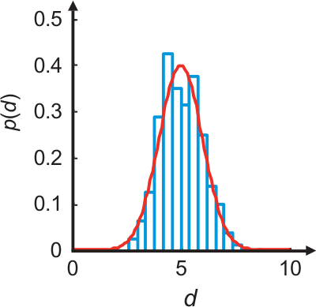
10.1 Probability density function
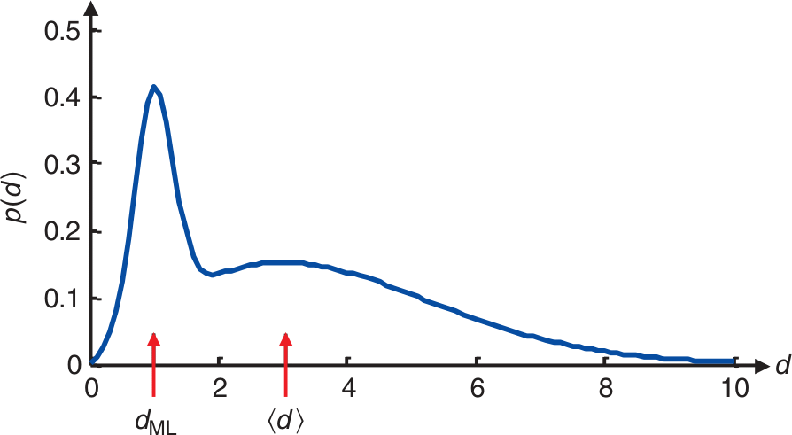
\[\int p(d)\dd d=1\]
10.2 Definitions
defines how probable a certain event is expected to occur
Given a known model or system, what are the chances of a specific outcome?
defines probability of data under the assumption of a model (hypothesis) is true
Given an observed outcome, what is the chance that our model or system parameters are correct?
\(P(A|B)\) Probability of A under the assumption that B occurs
10.3 Variance
\[ \sigma^2 = \int (d-\expval{d})^2 p(d) \dd{d} \]
\(\sigma\) is a measure of the width of the distribution
related to standard deviation and mean of sampling
\[ \sigma^2_{est}=\frac{1}{N-1} \sum\limits_{i=1}^N (d_i - \expval{d})^2 \qq{with} \expval{d}=\frac{1}{N}\sum\limits_{i=1}^{N} d_i \]
10.4 Data correlation
independent: \(p(\vb d) = p(d_1) p(d_2)\ldots p(d_N)\)
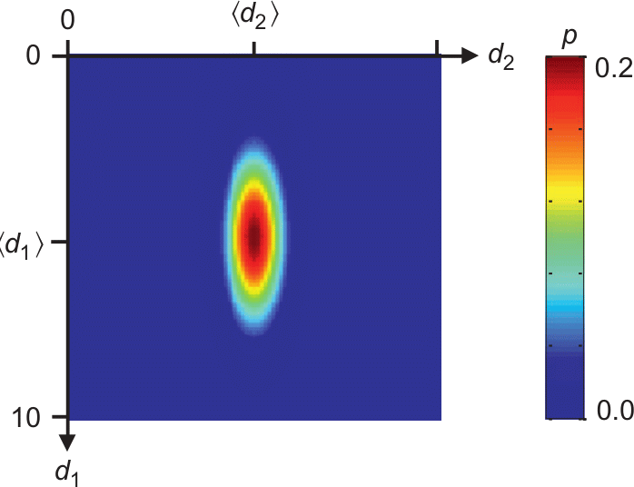
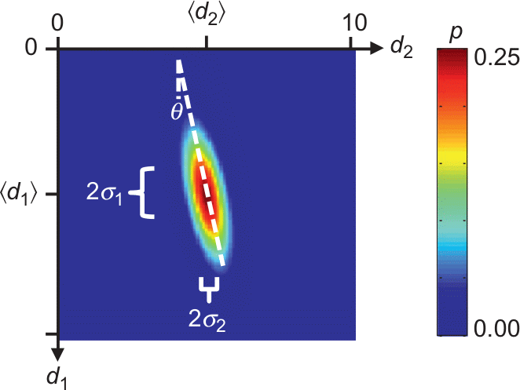
10.5 Covariance
(measure of correlation between data)
\[ \mbox{cov}(d_1, d_2) = \int\int (d_1-\expval{d_1})(d_2-\expval{d_2}) p(d_1, d_2) \dd{d_1}\dd{d_2} \]
\[ \expval{d_i} = \int\ldots\int d_i p(\vb d) \dd{d_1}\ldots \dd{d_N} \]
10.6 Covariance propagation
Linear problem \(\vb m = \vb M \vb d\), e.g., \(\vb m = \vb G^\dagger\vb d\)
Mean value \(\expval{\vb m}=\vb M \expval{\vb d} + \vb n\) and covariance
\[\mbox{cov}(\vb m) = \vb M \mbox{cov}(\vb d) \vb M^T\]
Least-squares: \(\vb M=(\vb G^T \vb G)^{-1} \vb G^T\), uncorrelated data: \(\mbox{cov}(\vb d)=\sigma_d^2 \vb I\)
\[ \Rightarrow \mbox{cov}(\vb m) = (\vb G^T \vb G)^{-1} \vb G^T \sigma_d^2 \vb I ((\vb G^T \vb G)^{-1} \vb G^T)^T = \sigma_d^2 (\vb G^T \vb G)^{-1} \]
10.7 A priori knowledge
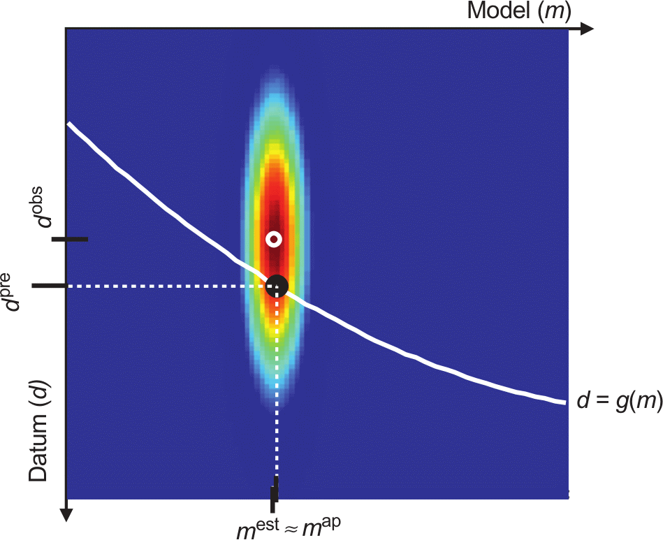
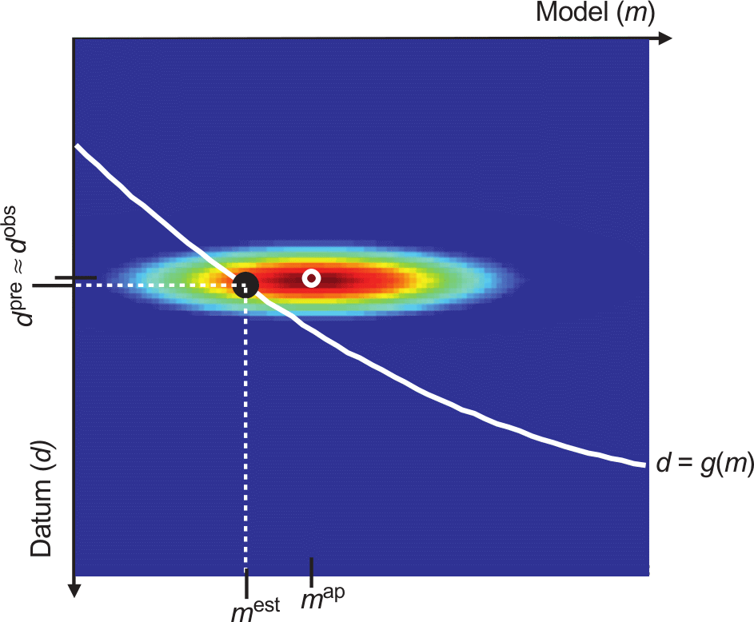
10.8 Bayes’ theorem
\(p(a|b) = p(a, b) / p(b)\)
\[p(\vb m|\vb d)p(\vb d) = p(\vb d|\vb m)p(\vb m)\]
\[p(\vb m|\vb d) = \frac{p(\vb d|\vb m)p(\vb m)}{p(\vb d)}\]
posterior distribution \(\propto\) likelihood x prior distribution
10.9 Example: COVID test
- \(P(T)\): probability of positive test (\(T\))
- \(P(I)\): probability of a person to be ill (1%) (\(I\))
- \(P(T|I)\): (conditional) probability of a test recognizing illness (90%)
assume 1000 patients (1%=10 ill, 99%=990 healthy)
false tests (10%) \(\Rightarrow\) 1 false negative (9 correct), 99 false positive
\[ P(I|T) = \frac{P(T|I)P(I)}{P(T)} = \frac{0.9 \cdot 0.01}{108/1000}=8.3\% \]
10.10 Example: COVID test (2)
- \(P(T)\): probability of positive test (\(T\))
- \(P(I)\): probability of a person to be ill (1%) (\(I\))
- \(P(T|I)\): (conditional) probability of a test recognizing illness (99%)
assume 10000 patients (1%=100 ill, 99%=9900 healthy)
false tests (1%) \(\Rightarrow\) 1 false negative (99 correct), 99 false positive
\[ P(I|T) = \frac{P(T|I)P(I)}{P(T)} = \frac{0.99 \cdot 0.01}{198/10000}=50\% \]
10.11 FIFA example
Tony hears football-watching Arthur cheer. How probable is a goal being made?
- Assumption: In 2% of the time (segments covering a cheer) there is a goal.
- Assumption: If a goal is made by Arthurs team, he cheers by 90%.
- Assumption: Reasons for non-goal cheers (98%) have a probability of 1%.
\[ P(G|C)=\frac{P(C|G) P(G)}{P(C|G)+P(C|-G)} = \frac{0.9 \cdot 0.02}{0.02 \cdot 0.9+0.98\cdot 0.01}=64.7\% \]
10.12 Bayes theorem simple example
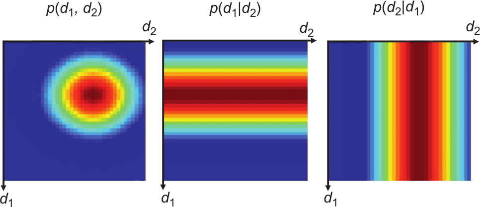
10.13 A priori (Menke, 2012)
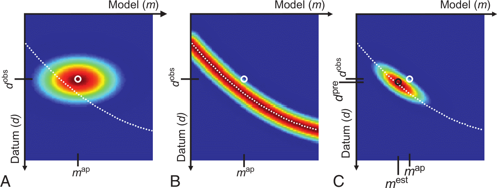
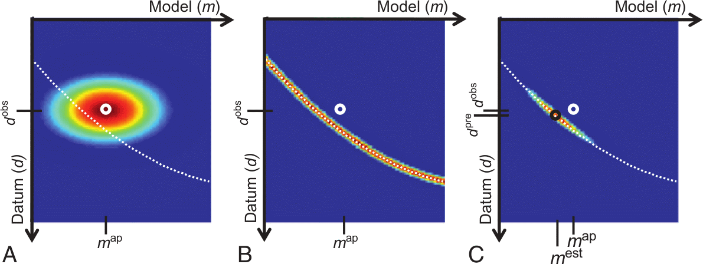
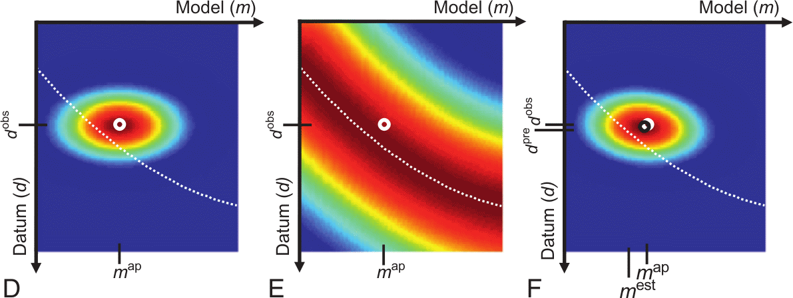
A: a priori pdf \(p_a(\vb m, \vb d)\), B: conditional pdf \(p_g(\vb m, \vb d)\), C: product \(p_t(\vb m, \vb d)=p_a(\vb m, \vb d) p_g(\vb m, \vb d)\), white: theory
10.14 A priori and likelihood
10.15 Bayes view in nonlinear problems
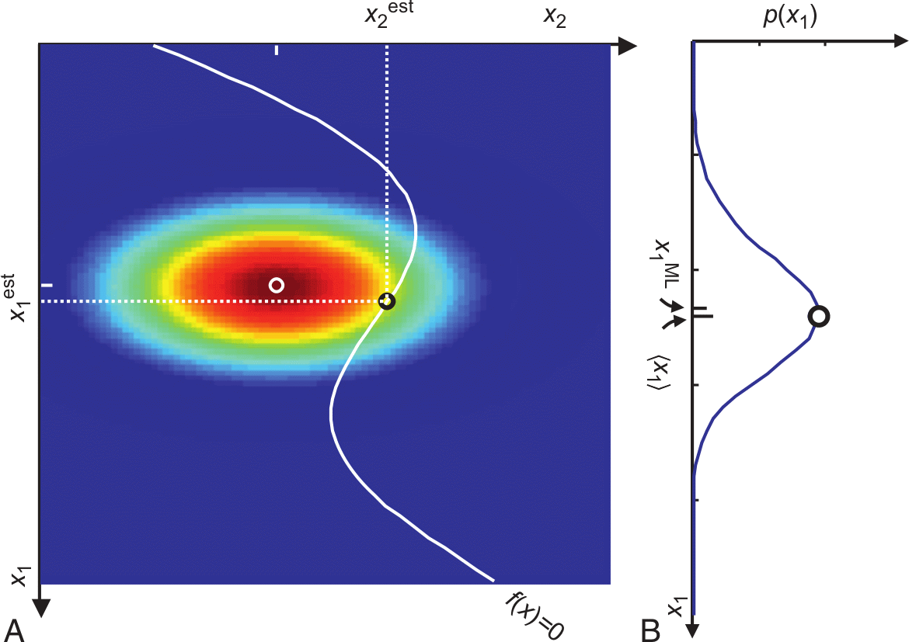
10.16 Highly nonlinear problems
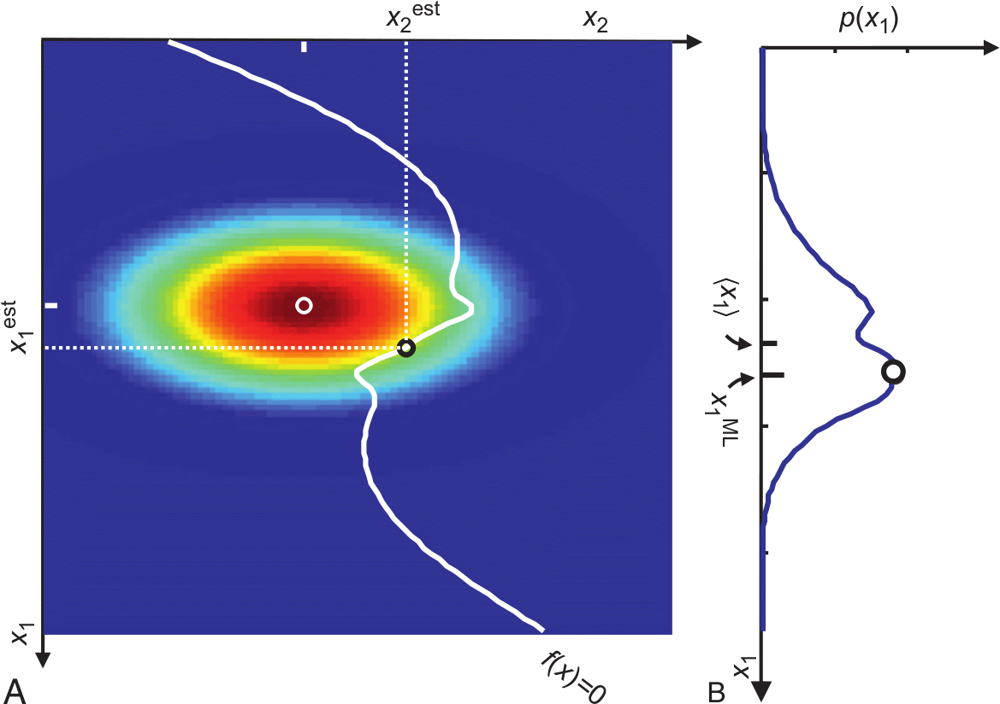